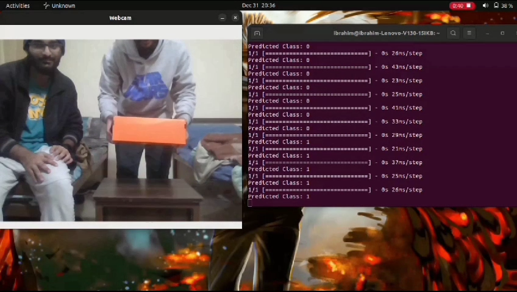

Projects
ESP32 Web Server with FreeRTOS
Implemented a web server on ESP32, using FreeRTOS for efficient task management.
Technologies: ESP32, FreeRTOS, C++, HTML, CSS, JavaScript, IoT

RF Communication with ESP32
Established RF communication between two ESP32 devices using the RadioHead library.
Technologies: ESP32, RadioHead Library

Text Recognition using ESP32-CAM and OCR
Used an ESP32-CAM to capture images and perform OCR with Tesseract.
Technologies: ESP32-CAM, PlatformIO, Python, Tesseract OCR, OpenCV

Human-Object Interaction Detection (HOID)
Developed a CNN for detecting human-object interactions in images.
Technologies: OpenCV, Machine Learning, CNN, Python3, Keras-TensorFlow
Landmark-based Localization for Indoor Delivery Robot
Developed a localization system for indoor robots using landmarks.
Technologies: ROS, C++, Python, QT, OpenCV, Gazebo, ESP32-CAM, Linux